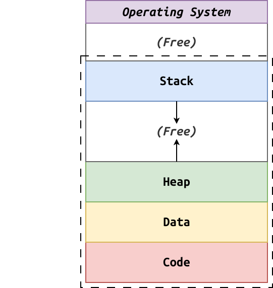

Review: Free List¶
What data structure do we use to keep track of memory? Free List
-
Three levels: OS, Runtime, Process
-
Process uses
Clibrary to track heap allocation.

-
sbrk changes the location of the program break, which is the between the data segment and the heap segment.
-
Initially, the heap is empty, so when we call sbrk we are growing the heap (data never grows).
We can shrink the heap with a negative value, but we must be careful to not release allocated blocks that are still in use.
Moreover, since sbrk can be expensive, we want to avoid shrinking until we
have a large enough chunk at the top of the heap (ie.
TRIM_THRESHOLD).
Project 03: Our free list holds old
but unused (ie. free) allocations.
Heap Allocation: malloc1.c¶
Rather than always calling sbrk to allocate more space, try to re-use previous allocations from free list.
Explainstruct Block(attributes, alignment, size).Implementmalloc(begin).Implementfree_list_search(discuss fit algorithms).Implementmalloc(continue).Implementblock_allocate.- Implement
block_detach. - Complete
malloc. - Implement
free. - Implement
free_list_insert.
/* Block Constants */
#define ALIGNMENT (sizeof(double))
#define ALIGN(size) (((size) + (ALIGNMENT - 1)) & ~(ALIGNMENT - 1))
#define SBRK_FAILURE ((void *)(-1))
/* Block Macros */
#define BLOCK_FROM_POINTER(ptr) \
(Block *)((intptr_t)(ptr) - sizeof(Block))
/* Block Structure
*
* [ ]
* [ ] <- Block - Data (contents)
* [ ] <- Block - Header (struct)
*
**/
typedef struct block Block;
struct block {
size_t capacity; /* Number of bytes allocated to block */
size_t size; /* Number of bytes used by block */
Block * prev; /* Pointer to previous block structure */
Block * next; /* Pointer to next block structure */
char data[]; /* Label for user accessible block data */
}; /* sizeof(Block) = 8 + 8 + 8 + 8 = 32 bytes */
Block * block_allocate(size_t size) {
intptr_t allocated = sizeof(Block) + ALIGN(size);
Block * block = sbrk(allocated);
if (block == SBRK_FAILURE) {
return NULL;
}
block->capacity = ALIGN(size);
block->size = size;
block->prev = block;
block->next = block;
return block;
}
Block * block_detach(Block *block) {
/* Update prev and next blocks to reference each other
*
* [ before ]<->[ block ]<->[ after ]
*
* [ before ]<->[ after ]
*
**/
if (block) {
Block *before = block->prev;
Block *after = block->next;
before->next = after;
after->prev = before;
block->next = block;
block->prev = block;
}
return block;
}
/* Free List Global Variable */
Block FreeList = {0, 0, &FreeList, &FreeList};
/* Free List Functions */
Block * free_list_search(size_t size) {
/* Perform first fit algorithm: find first block largest to satisfy request */
for (Block *curr = FreeList.next; curr != &FreeList; curr = curr->next) {
if (curr->capacity >= size) {
return curr;
}
}
/* Best fit algorithm: find smallest block to satisfy request in order to
minimize internal fragmentation */
/* Worst fit algorithm: find largest block to satisfy request in order to
minimize external fragmentation */
return NULL;
}
void free_list_insert(Block *block) {
/* Append to tail
*
* [ tail ]<->[ FreeList ]
*
* [ tail ]<->[ block ]<->[ FreeList ]
*
**/
Block *tail = FreeList.prev;
tail->next = block;
FreeList.prev = block;
block->next = &FreeList;
block->prev = tail;
}
/* POSIX API Functions */
/**
* Allocate specified amount memory.
* @param size Amount of bytes to allocate.
* @return Pointer to the requested amount of memory.
**/
void *malloc(size_t size) {
/* Handle empty size */
if (!size) {
return NULL;
}
/* Search free list for any available block with matching size */
Block *block = free_list_search(size);
if (!block) {
block = block_allocate(size);
} else {
block = block_detach(block);
}
/* Could not find free block or allocate a block, so just return NULL */
if (!block) {
return NULL;
}
/* Return data address associated with block */
return block->data;
}
/**
* Release previously allocated memory.
* @param ptr Pointer to previously allocated memory.
**/
void free(void *ptr) {
if (!ptr) {
return;
}
Block *block = BLOCK_FROM_POINTER(ptr);
free_list_insert(block);
}
What issues and challenges (and mechanism to address)?
-
Internal Fragmentation - Overallocation -> Splitting (during
malloc).- Draw a picture!
External Fragmentation - Not enough contiguous allocation -> Coalescing (during
free).-
Insert in sorted order.
-
Need two call
block_mergetwice (after, before).
Virtualization: Lies¶
-
Infinite Memory
-
Contiguous Allocation
-
Dedicated Ownership
Restaurant Analogy: Raising Cane's
-
To implement this lie, we need to perform address translation.
-
To perform translation, we rely on MMU to do it on-demand in hardware.
Base and Bounds:
-
Internal Fragmentation
-
Can't easily grow

Segmentation: Overview¶
Segmentation is a generalized form of base and bounds:
-
Each component in the address space is considered a separate segment.
-
Each segment has its own base and bounds registers.

Segmentation: Segments¶
Because our address space is split into separate segments, we have some additional issues and opportunities:
-
Code Sharing: We can now share common code segments (ie. multiple instances of programs)
-
Growth Direction: While most segments such as heap grow in positive direction, the stack grows downwards.
-
Ubuntu has switched to Rust coreutils... by default Rust applications are statically linked... is this an issue when it comes to code sharing? more memory usage because libraries can't be shared
-
Ubuntu actually uses dynamic linking and ... compiles all the programs into a single binary with hardlinks for each utility... is this also an issue? no because the binary can be loaded once and shared for each utility.
In addition to the base and bounds, we will need accounting information!
Segmentation: Hardware Information¶
To support segmentation, the MMU now needs to know the following information:
Segment Base Size Growth Positive? Protection Code 32K 2K 1 Read-Execute Data 34K 2K 1 Read-Write Heap 36K 2K 1 Read-Write Stack 28K 2K 0 Read-Write Operating system must track this information for every process and save and restore it on each context switch.
Segmentation: Address Translation¶
Given the following
16-bitvirtual address:
- Why
2-bitsfor segments?4
-
What is the largest possible segment size?
2^14 = 2^4 * 2^10 = 16 KWhat is the maximum possible offset value?
2^14 - 1 = 11 1111 1111 1111 = 3 F F F = 16383Which segment is this virtual address located in?
heap
What is the physical address of this virtual address?
PA = 36K + Offset = 36K + 522 = 37386Segmentation: Reading 08¶
/* Constants */ #define KB (1<<10) #define SEGMENT_MASK (0xC000) #define SEGMENT_SHIFT (14) #define OFFSET_MASK (~SEGMENT_MASK) /* Structures */ typedef struct { uint16_t base; uint16_t size; } SegmentRecord; /* Constants */ SegmentRecord MMU[] = { {.base = 32*KB, .size = 2*KB}, /* 00: Code */ {.base = 34*KB, .size = 2*KB}, /* 01: Data */ {.base = 36*KB, .size = 2*KB}, /* 10: Heap */ {.base = 28*KB, .size = 2*KB}, /* 11: Stack */ }; int main(int argc, char *argv[]) { uint16_t virtual_address; while (fread(&virtual_address, sizeof(uint16_t), 1, stdin)) { uint16_t segment = (virtual_address & SEGMENT_MASK) >> SEGMENT_SHIFT; uint16_t offset = (virtual_address & OFFSET_MASK); char *fault = ""; if (offset >= MMU[segment].size) { fault = " Segmentation Fault"; } uint16_t physical_address = MMU[segment].base + offset; printf("VA[%04hx] -> PA[%04hx]%s\n", virtual_address, physical_address, fault); } return EXIT_SUCCESS; }Segmentation: Problems¶
Unfortunately, segmentation suffers from a major problem:
External fragmentation: the variable sized segments leads to many tiny holes.
-
We can compact segments, but that is expensive.
-
We can rely on free-list management algorithms, but they can only minimize fragmentation.
Analogy: Packing a suitcase (regular sized things)